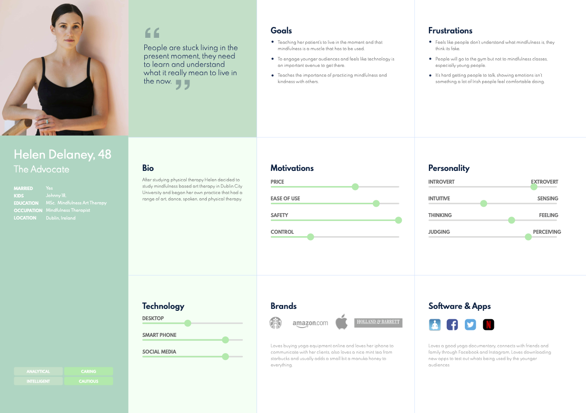
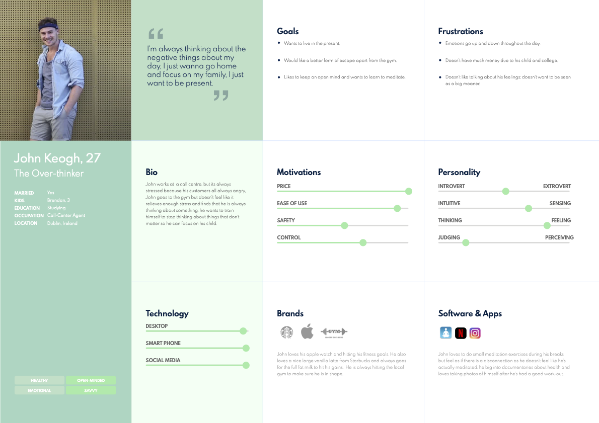
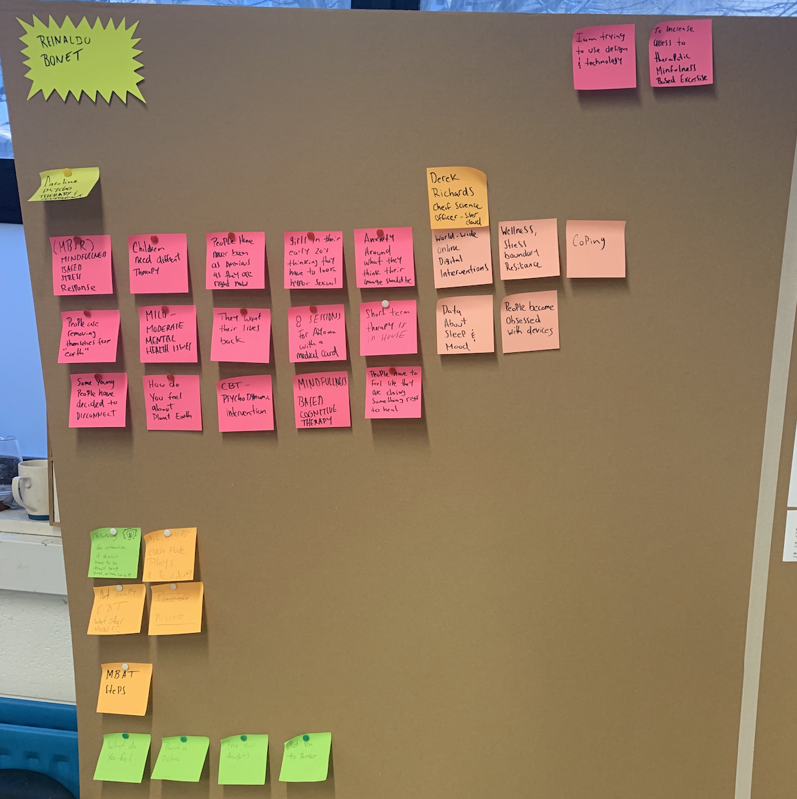
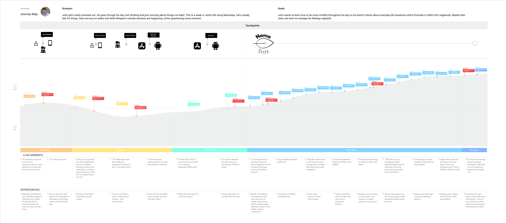

Namastay
Interaction Design

Role
UX/UI Design (Individual Project)
Tools
Adobe Illustrator, Photoshop and Premier Pro, Figma, Blender, Miro
Summary
Namastay is a research project I undertook with Silvercloud, a mental health online platform. This project aimed to highlight how mindfulness applications can cater to users who want to learn to meditate and monitor their progress through
guided micro-interactions.
Challenges
The challenge for most users utilising meditation apps is that users typically want to try and activate a state of flow to achieve a meditative state. Through research, I found that the apps currently on the market weren't doing that, and
users felt that the apps weren't very emotional.
The Solution
Personas
I designed Namastay with two personas in mind; Mindfulness Practitioners, which advocate holistic approaches to mental health (The Advocate), and people who suffer from everyday stress and anxiety (The Over-Thinker).


User Research
The research with critical stakeholders highlighted some key insights, specifically what was said by Dr Derek Richards and some users who had previously used mindfulness apps.
Interviewees

Dr. Derek Richards
Silvercloud, Researcher
Caroline
NCAD, Mindfulness Counselor
Helena
Yoga and Mindfulness Coach
Research Synthesis
After my interviews, I was able to gain some insights as to what it was that I could design. "Maybe having a response to something when someone does the mindfulness exercises. There's a lot of variability in those solutions." This insight
got me thinking of interactions and responsiveness, which according to what users say about the current apps on the market, were "lifeless and unemotional."

User Journey Map
Through a user journey map, I was able to identify how users would experience Namastay over some time, so I can maximise the user experience if any issues occur. The user journey map allowed me to recognise that users might like to have features
like turning the apps audio off and the voice recording feature to monitor their progress.

Ideation
Sketching allowed me to develop Namastays minimalist style, enabling users to interact with the 3D environment easily. I also began ideating the specific interaction the users would have available to them.

Interaction Flow
Through the interaction flow diagram, I was able to ideate the flow of Namastay and tested the flow using the paper prototypes above to ensure what I was designing was what the user would need.

User Interface Flow
I then used the wireframes to have a starting point for the final design, which I designed using Figma, and there I was able to animate and prototype the app for usability testing with my users. The flow diagrams show the steps a user can
take throughout the application.

UI Prototype
The below prototype was designed in Figma and tested with users. Furthermore, I gained insights into what needed changing for users to have a better experience. The one below is the final version.